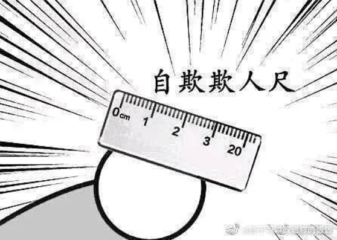
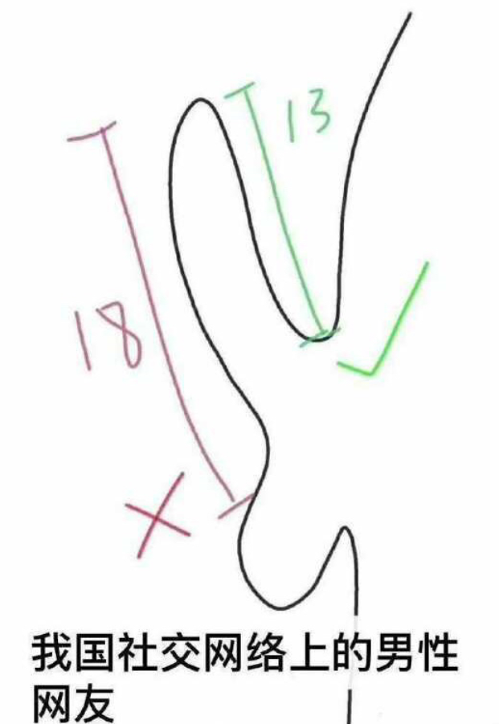

沒事的，這只是精子中毒
第一次約炮
在我上周從樓下藥店買來HCG*試紙檢測為陰性前，我還整個大驚從早到晚失色了大概十來天。
事情要從我某天上Tinder講起。其實也沒什麽好説的，反正我就是遇到了一個普通男人，他有兩個特質，愛撒嬌和🐔大。前者讓我放下戒心去見面，畢竟在我的意識裏面，一個男人會撒嬌應該不太可能是個直男癌吧？後者，是在我覆水難收的那一刻才意識到的，並因此擊碎了我前者的誤認。
畫面快轉，原本一切都很好！直到他突然問我：怎樣我🐔很大吧，是不是你見過最大的？
儅他説出這句話的那一瞬間，我內心釋出了巨冷無比的嘲笑：噢，男人。（不要再🐔中心了！呃！）


之後的一切就是我努力波瀾不驚地保持著，直到結束，我都忍住了沒把事實告訴他：哥們，大🐔對我而言並不舒適，請你不要再動了！
最讓我糟心的是這哥們用了一個完全過小、不合size的套，我想著要麽滑落要麽破裂要麽在這一切發生之前趕緊結束！
回到家，原本這只是個微小的擔憂，但因爲我自己過去的創傷經歷，讓我這整個月突然夢囘16嵗，變成那個以爲隨便蹭蹭就能懷孕的少女；更不幸的是，可能是因爲這一個月我都在吃自己煮的東西——飲食不良（笑），導致了我月經周期推遲了自我留意以來最久的一次——整整八天！（七天就應該去看醫生了。）
總之，就這樣，恐懼和想象隨著時間流逝而不斷放大。
月經神降臨
今天終於來M了（走，出去浪），但想起之前思索的時候，我發現自己始終不願意以生育功能的角度去描述可能會發生的這件事。
因爲其背後諸多爭論帶來的負擔，讓本來像「蛀牙」般程度為1的不幸，變成了程度為10的不幸——若有些直行體非得要上升到殺死生命的程度的話。
因此我建議大家，對於目前不想有小孩的女性，如果她的HGC檢測不幸為陽性，請不要在見到她的時候使用“你是不是「有了」？”或「懷孕了」的話語。甚至連「妊娠」這麽客觀、醫學的詞匯也因爲其生育意義上所指，也很難被接受。
事實上，我更願意將這種狀況稱為「精子中毒」、「卵子被感染」或「患上受精卵」等等。連帶的，用以治療這種症狀的手段，也請不要再喚作「墮胎」或「刮宮術」這類聽起來就讓人眉頭很痛的字眼了。而應該替換成「受精卵移除術」。
試想一下，儅一個想要尋求幫助的女性去詢問醫生該如何是好的時候，醫生回答：你只要需要打個麻醉，睡個十幾分鐘，我們幫你把受感染的卵子取出就好了。——事情是不是就變得非常簡單、非常輕鬆了呢！當然，我們還是要盡量避免它發生，就像我們要避免蛀牙、近視和抽脂一樣。
對此，我又不得不提一句，很不幸的是，携帶精子卻又不會被其所傷害的天然宿主占了全世界一半的人口。對於如此生理上的不公，這另一半人口是不是有責任不要將其傳染給會被感染的女性——最好能采取永久阻止精子排出的措施。畢竟，一旦她人被精子感染上，如若不加干預，這還沒頭髮絲大小的病原體就有可能變成巨大的寄生物。
*HCG（人绒毛膜促性腺激素）是胚胎受精后立刻就会分泌的激素